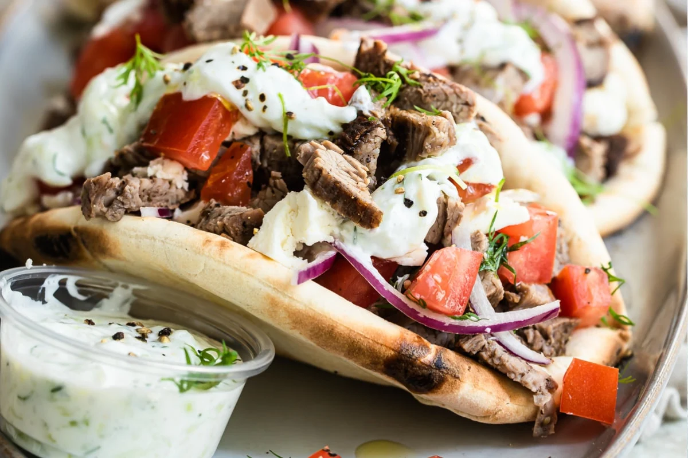
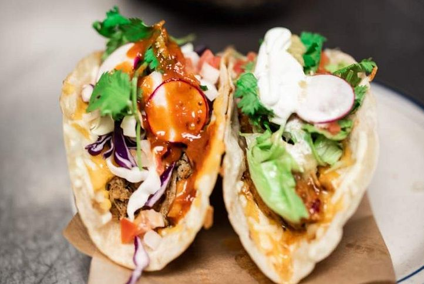
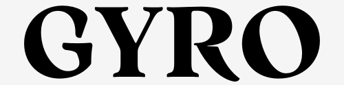
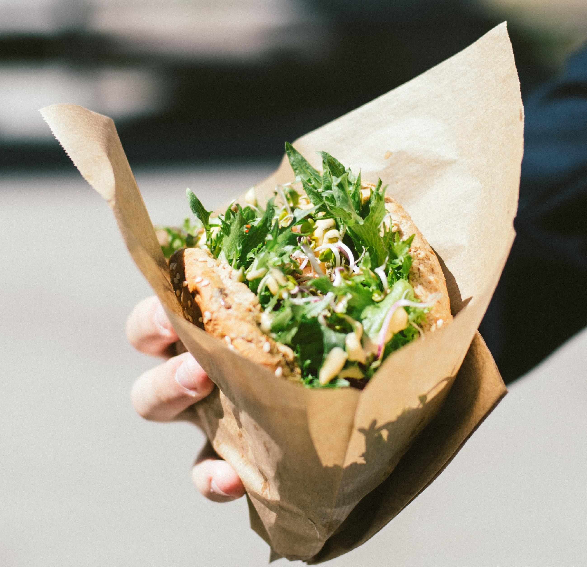
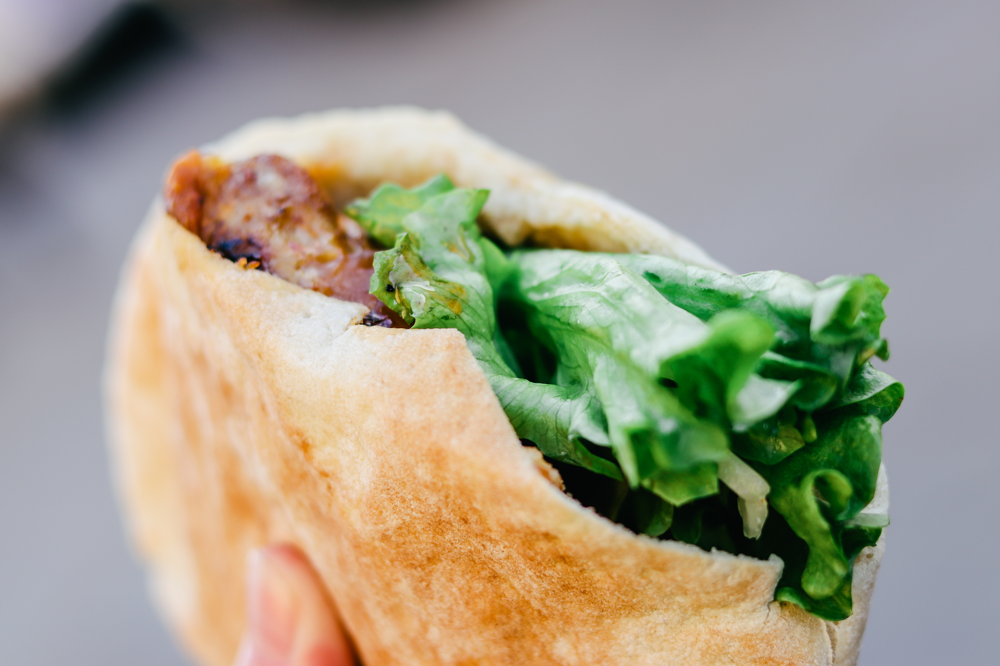
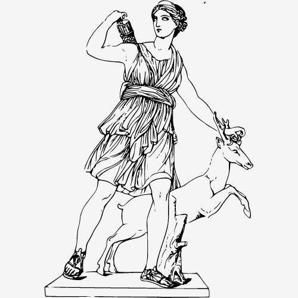

Sandwiches
|
Drinks & Sides
  $10
Beef Gyro | Pork Gyro | Chicken Gyro
The gyro sandwich (which is correctly but not often pronounced as “yee-ro”) is a traditional Greek sandwich. It’s a little bit like a taco and a hamburger had a baby. It is, however, uniquely and completely Greek. A gyro is made of delicious beef, lamb, pork, chicken, veal, mutton or a mixture of any of these things cooked and seasoned with delicious spices. It is then thinly sliced and piled on fluffy pita bread. A gyro is then usually topped with onion, tomato, lettuce, and a delicious yogurt-based cucumber sauce called tzatziki.
 $12
Chicken Pesto Pita | Steak Pita | Pork Pita
Pita originated from the Middle East, and it is known to be the oldest type of bread as it has been existing for around 4,000 years now. The name “pita” simply means “flatbread” and Greeks were the first people to use that term. Pita spread throughout the world through the Bedouins, which is as far back as the origins and uses of pita bread can be traced. Bedouins traded pita for other essentials, and it became a popular marketplace good as a result. Pita can be made from grains or wheat. Moreover, there are several ways to make pita, and among them include baking, steaming, frying, and grilling. Traditionally, it is made on an extremely hot stovetop, which is how the standard bubbles and char marks are formed.